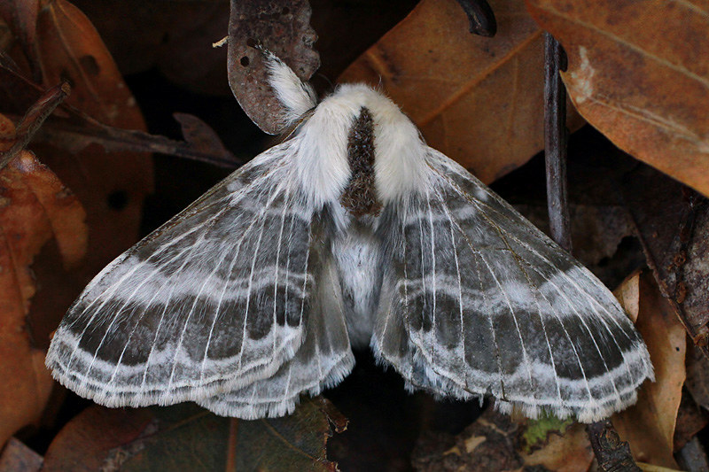

Tolype velleda, the large Tolype Moth or velleda lappet moth, is a species of moth of the family Lasiocampidae. It was first described by Caspar Stoll in 1791. The species is found from Nova Scotia to central Florida, west to Texas and north to Ontario. The wingspan is 32-58 mm. The females are larger than the males. Tolype Moths primarily infests apple, ash, beech, birch, elm, oak, poplar, plum, and various fruit trees.
